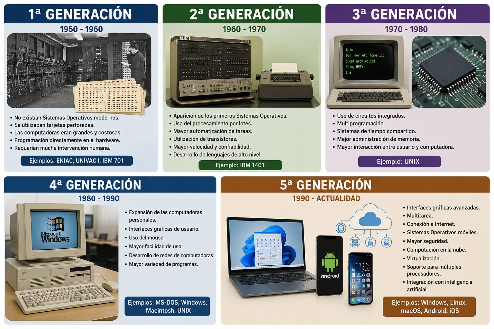
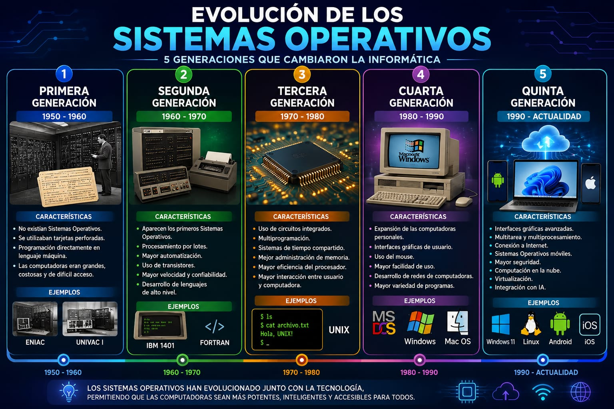

Un recorrido histórico desde los inicios de la computación hasta la actualidad


No existían sistemas operativos. Se programaba directamente en lenguaje máquina. Usaban tubos de vacío y tarjetas perforadas.
Leer más →Aparecen los transistores y sistemas por lotes. Surgen los primeros lenguajes de alto nivel.
Leer más →Circuitos integrados, multiprogramación y multiusuario. Nace UNIX en 1969.
Leer más →Microprocesadores y computadoras personales. Aparecen MS-DOS, Mac OS y primeras versiones de Windows.
Leer más →Interfaz gráfica, internet, dispositivos móviles, Android, iOS, computación en la nube.
Leer más →Resumen y aprendizaje sobre la evolución de los sistemas operativos.
Ver conclusiones →